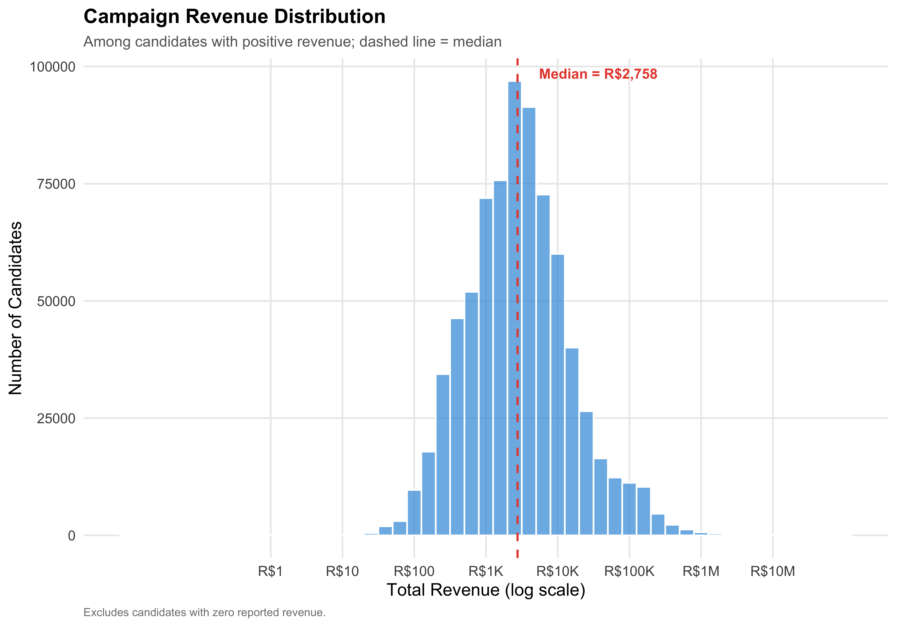
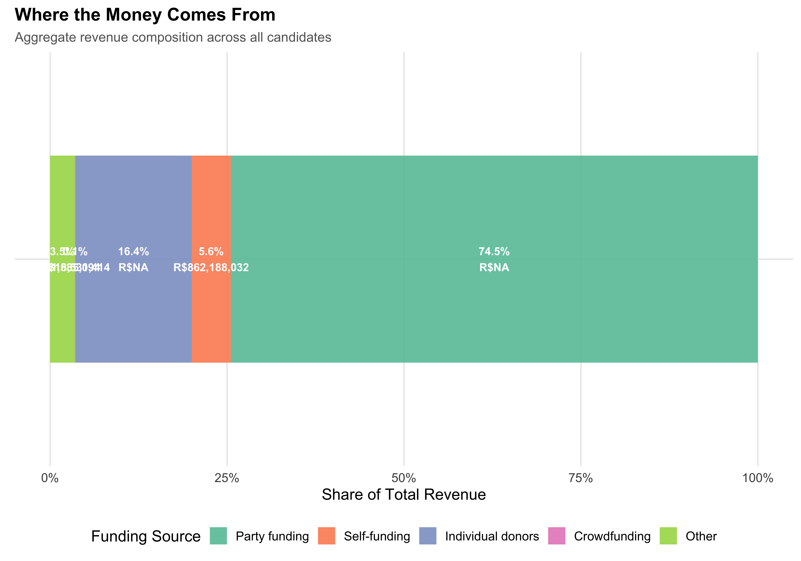
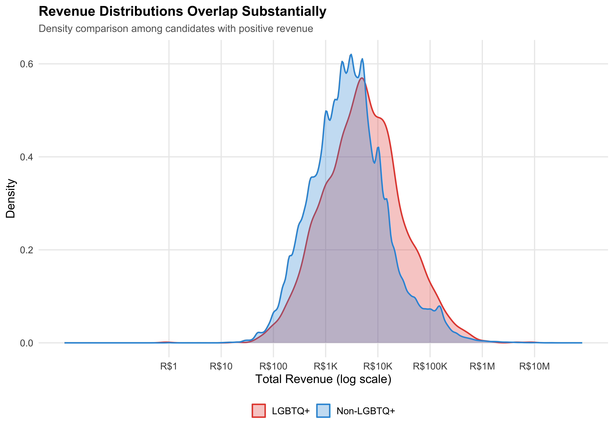
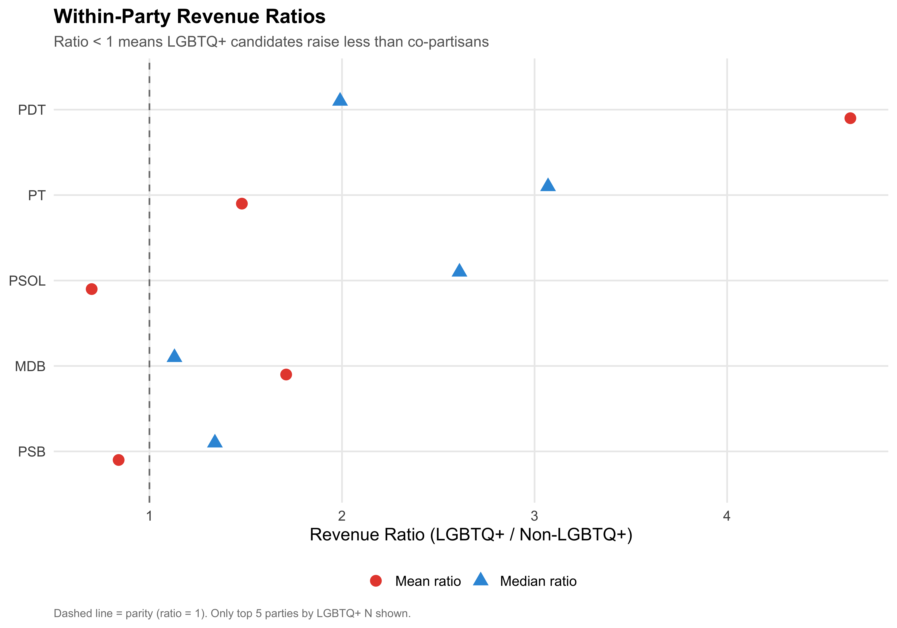

Follow the Money: Revenue Sources and Financing Gaps
1 Overview
Campaign finance is the lifeblood of electoral competition. In Brazil’s municipal elections, candidates must register all revenue with the Tribunal Superior Eleitoral (TSE), creating a comprehensive public record of who funds whom. This chapter provides a transparent, ground-up analysis of campaign revenue — from raw source categories through aggregate patterns — with special attention to how LGBTQ+ candidates’ financial profiles differ from the broader candidate population.
We proceed in four stages: (1) documenting the raw data categories for full transparency, (2) describing general revenue patterns across all candidates, (3) comparing LGBTQ+ and non-LGBTQ+ financing, and (4) disaggregating by identity category and party.
2 Raw Data Documentation
2.1 TSE Revenue Source Categories
The TSE raw finance file classifies each transaction by DS_ORIGEM_RECEITA (revenue source). Before any analysis, we display the complete frequency table of these raw categories, along with our classification scheme. This is the foundation of all subsequent finance analysis.
Table 1: Complete TSE Revenue Source Categories with Classification
TSE Category
N Transactions
% of Trans.
Total (R$)
Our Label
Recursos de outros candidatos
669606
32.9%
R$260,338,476
Other candidates
Recursos de pessoas físicas
561708
27.6%
R\(1,221,519,516|Individual donation |
|Recursos de partido político | 377468| 18.5%| R\)NA
Party funding
Recursos próprios
263827
12.9%
R$426,344,883
Self-funding
Doações pela Internet
90850
4.5%
R$6,457,032
Online donations
#NULO
66718
3.3%
R$0
Null/Unclassified
Recursos de Financiamento Coletivo
4324
0.2%
R$8,092,035
Crowdfunding
Recursos de origens não identificadas
2687
0.1%
R$1,071,403
Other
Rendimentos de aplicações financeiras
263
0.0%
R$115,533
Other
Comercialização de Bens com OR
109
0.0%
R$37,252
Other
Comercialização de Bens com FEFC
17
0.0%
R$18,289
Other
Transparency Principle
Every transaction in the TSE receitas file is classified using the mapping above. The raw Portuguese-language category names are preserved alongside our English labels so that any researcher can verify the mapping. The classification code is in code/02_load_finance_raw.R.
3 General Revenue Patterns
3.1 Overall Revenue Distribution
The measure total_revenue captures the sum of all campaign receipts registered with the TSE for each candidate, denominated in Brazilian reais (R$). This includes financial contributions (cash, PIX, bank transfers) and in-kind/estimated contributions (goods and services assigned a monetary value). A candidate with zero total revenue either received no contributions or did not report any.
df %>%filter(total_revenue >0) %>%ggplot(aes(x =log10(total_revenue))) +geom_histogram(binwidth =0.2, fill ="#3498DB", alpha =0.7, color ="white") +geom_vline(xintercept =log10(median(df$total_revenue[df$total_revenue >0])),linetype ="dashed", color ="#E74C3C", linewidth =0.8) +annotate("text",x =log10(median(df$total_revenue[df$total_revenue >0])) +0.3,y =Inf, vjust =2, hjust =0,label =paste0("Median = ", format_brl(median(df$total_revenue[df$total_revenue >0]))),color ="#E74C3C", fontface ="bold", size =4) +scale_x_continuous(breaks =0:7,labels =c("R$1", "R$10", "R$100", "R$1K", "R$10K", "R$100K", "R$1M", "R$10M") ) +labs(x ="Total Revenue (log scale)",y ="Number of Candidates",title ="Campaign Revenue Distribution",subtitle ="Among candidates with positive revenue; dashed line = median",caption ="Excludes candidates with zero reported revenue." )save_figure(last_plot(), "05_revenue_dist")

Figure 1: Distribution of Total Campaign Revenue (Log Scale)
3.2 Revenue Composition by Source
Campaign revenue is classified into five funding categories based on the TSE’s DS_ORIGEM_RECEITA field: (1) Self-funding — the candidate’s own resources; (2) Party funding — transfers from the candidate’s political party; (3) Individual donors — contributions from individual persons (pessoas fisicas); (4) Crowdfunding — donations via collective financing platforms; and (5) Other — residual sources including transfers from other candidates and unclassified entries. The classification mapping is documented in Table 1 above.
Show code
comp_overall <- df %>%summarise(`Self-funding`=sum(self_funding_amt, na.rm =TRUE),`Party funding`=sum(party_funding_amt, na.rm =TRUE),`Individual donors`=sum(individual_funding_amt, na.rm =TRUE),`Crowdfunding`=sum(crowdfunding_amt, na.rm =TRUE),`Other`=sum(total_revenue, na.rm =TRUE) -sum(self_funding_amt, na.rm =TRUE) -sum(party_funding_amt, na.rm =TRUE) -sum(individual_funding_amt, na.rm =TRUE) -sum(crowdfunding_amt, na.rm =TRUE) ) %>%pivot_longer(everything(), names_to ="source", values_to ="total") %>%mutate(pct = total /sum(total),source =factor(source,levels =c("Party funding", "Self-funding", "Individual donors","Crowdfunding", "Other")) )ggplot(comp_overall, aes(x ="", y = pct, fill = source)) +geom_col(width =0.6, alpha =0.9) +geom_text(aes(label =paste0(format_pct(pct), "\n", format_brl(total))),position =position_stack(vjust =0.5), size =3.5, color ="white",fontface ="bold") +coord_flip() +scale_fill_brewer(palette ="Set2", name ="Funding Source") +scale_y_continuous(labels = percent) +labs(x =NULL,y ="Share of Total Revenue",title ="Where the Money Comes From",subtitle ="Aggregate revenue composition across all candidates" )save_figure(last_plot(), "05_composition_overall")

Figure 2: Aggregate Revenue Composition by Funding Source
Table 3: Revenue Comparison: LGBTQ+ vs Non-LGBTQ+ Candidates
Metric
LGBTQ+
Non-LGBTQ+
N
12,532
920,934
% Zero Rev.
13.6%
18.5%
Mean Rev.
R$24,007
R$16,522
Median Rev.
R$3,701
R$1,746
SD Rev.
R$183,097
R$279,321
Mean Trans.
5.3
4.4
Mean Donors
3
2.5
% Self-fund
10.2%
14.6%
% Party
47.6%
27.2%
% Individual
12.6%
17.3%
% Crowdfund
0.4%
0.1%
The Financing Gap
The median revenue for LGBTQ+ candidates is R$3,701, compared to R$1,746 for non-LGBTQ+ candidates — a ratio of 2.12, indicating that LGBTQ+ candidates actually raise more at the median. At the mean, LGBTQ+ candidates raise R$24,007 versus R$16,522 for non-LGBTQ+ candidates (ratio: 1.45). These figures suggest that LGBTQ+ candidates do not face an obvious aggregate financing disadvantage, though within-group and within-party patterns may differ.
4.2 Revenue Distribution Comparison
Show code
df %>%filter(total_revenue >0) %>%mutate(group =if_else(lgbtq_candidate, "LGBTQ+", "Non-LGBTQ+")) %>%ggplot(aes(x =log10(total_revenue), fill = group, color = group)) +geom_density(alpha =0.3, linewidth =0.8) +scale_fill_manual(values = pal_lgbtq, name =NULL) +scale_color_manual(values = pal_lgbtq, name =NULL) +scale_x_continuous(breaks =0:7,labels =c("R$1", "R$10", "R$100", "R$1K", "R$10K", "R$100K", "R$1M", "R$10M") ) +labs(x ="Total Revenue (log scale)",y ="Density",title ="Revenue Distributions Overlap Substantially",subtitle ="Density comparison among candidates with positive revenue" )save_figure(last_plot(), "05_density_revenue")

Figure 3: Revenue Distribution: LGBTQ+ vs Non-LGBTQ+ (Log Scale)
Figure 7: Revenue Composition by Identity Category
Within-Group Differences
The LGBTQ+ umbrella encompasses different financing realities. Among identity categories, Bisexual+ candidates have the highest average party funding share (58.9%), while Asexual candidates have the highest average individual donor share (15.6%). These differences have implications for candidate autonomy and campaign capacity.
6 Within-Party Comparison
The within-party revenue ratio compares LGBTQ+ and non-LGBTQ+ candidates within the same party. The ratio is computed as LGBTQ+ mean (or median) revenue divided by non-LGBTQ+ mean (or median) revenue for each party. A ratio below 1 means LGBTQ+ candidates raise less than their co-partisans; a ratio above 1 means they raise more. This analysis focuses on the top five parties ranked by number of LGBTQ+ candidates to ensure adequate sample sizes.
A critical question is whether any aggregate LGBTQ+ financing difference persists within the same party. If LGBTQ+ candidates in Party X raise less than non-LGBTQ+ candidates in Party X, the difference cannot be attributed solely to party ideology or institutional resources.
Table 5: Revenue Comparison Within Top Parties (LGBTQ+ vs Non-LGBTQ+)
Party
N LGBTQ+
N Non-LGBTQ+
Mean Rev. LGBTQ+
Mean Rev. Non-LGBTQ+
Mean Ratio (L/NL)
Median Rev. LGBTQ+
Median Rev. Non-LGBTQ+
Median Ratio (L/NL)
MDB
788
88,616
R$30,245
R$17,649
1.71
R$2,500
R$2,221
1.13
PDT
740
45,504
R$54,662
R$11,783
4.64
R$2,742
R$1,374
1.99
PSB
932
52,654
R$9,542
R$11,335
0.84
R$2,000
R$1,490
1.34
PSOL
1,336
7,272
R$46,612
R$66,953
0.70
R$13,273
R$5,095
2.61
PT
2,530
59,034
R$36,264
R$24,538
1.48
R$9,198
R$3,000
3.07
Show code
within_party_wide %>%select(party_abbrev, `Mean ratio`= mean_ratio, `Median ratio`= median_ratio) %>%pivot_longer(-party_abbrev, names_to ="metric", values_to ="ratio") %>%ggplot(aes(x =reorder(party_abbrev, ratio), y = ratio,color = metric, shape = metric)) +geom_hline(yintercept =1, linetype ="dashed", color ="gray50") +geom_point(size =4, position =position_dodge(width =0.4)) +coord_flip() +scale_color_manual(values =c("Mean ratio"="#E74C3C", "Median ratio"="#3498DB"),name =NULL) +scale_shape_manual(values =c("Mean ratio"=16, "Median ratio"=17),name =NULL) +labs(x =NULL,y ="Revenue Ratio (LGBTQ+ / Non-LGBTQ+)",title ="Within-Party Revenue Ratios",subtitle ="Ratio < 1 means LGBTQ+ candidates raise less than co-partisans",caption ="Dashed line = parity (ratio = 1). Only top 5 parties by LGBTQ+ N shown." )save_figure(last_plot(), "05_within_party_ratio")

Figure 8: LGBTQ+/Non-LGBTQ+ Revenue Ratio Within Top Parties
Within-Party Gap
Of the 5 parties examined, 2 show a mean revenue ratio below 1 (LGBTQ+ candidates raising less than co-partisans) and 3 show a mean ratio above 1. At the median, 0 of 5 parties have ratios below 1. The pattern suggests LGBTQ+ candidates do not systematically raise less than co-partisans in these parties.
7 Financial vs In-Kind Contributions
The TSE classifies each transaction’s DS_NATUREZA_RECEITA as either “FINANCEIRO” (financial) or a non-financial category. Financial contributions are direct monetary transfers: cash, PIX, bank deposits, and electronic transfers. In-kind contributions (recursos estimaveis) are non-monetary — goods, services, or volunteer labor that the campaign assigns a monetary value to for accounting purposes. Examples include donated office space, printing services, vehicles for campaign use, or professional labor contributed without charge. The variables pct_financial and pct_inkind express each type’s share of a candidate’s total revenue on a 0–100 scale.
Figure 10: Financial vs In-Kind Composition by Identity Category
What In-Kind Reveals
A higher share of in-kind contributions could signal either (a) grassroots support through volunteer labor and donated goods, or (b) a lack of access to cash-based funding. The interpretation depends on the absolute level: a candidate with high total revenue and a modest in-kind share has a very different profile from one who relies primarily on estimated resource contributions.
7.1 Types of In-Kind Contributions
The TSE records the specific type of each in-kind contribution in the field DS_NATUREZA_RECURSO_ESTIMAVEL. This variable is only populated for non-financial transactions and describes the nature of the donated good or service (e.g., advertising materials, vehicles, professional services). This section examines which types of in-kind support are most common and whether the composition differs between LGBTQ+ and non-LGBTQ+ candidates.
Table 7: Frequency of In-Kind Contribution Types (All Candidates)
In-Kind Type
N Transactions
% of In-Kind
Publicidade por materiais impressos
810,220
37.6%
Publicidade por adesivos
454,232
21.1%
Cessão ou locação de veículos
170,350
7.9%
Serviços contábeis
150,948
7.0%
Serviços advocatícios
133,348
6.2%
Atividades de militância e mobilização de rua
103,662
4.8%
Produção de programas de rádio, televisão ou vídeo
66,658
3.1%
Serviços prestados por terceiros
60,972
2.8%
Despesas com pessoal
51,570
2.4%
Diversas a especificar
38,808
1.8%
Produção de jingles, vinhetas e slogans
33,416
1.6%
Locação/cessão de bens imóveis
22,156
1.0%
Serviços próprios prestados por terceiros
14,042
0.7%
Combustíveis e lubrificantes
13,182
0.6%
Locação/cessão de bens móveis (exceto veículos)
5,200
0.2%
Aquisição/Doação de bens móveis ou imóveis
3,378
0.2%
Publicidade por jornais e revistas
3,052
0.1%
Materiais de expediente
3,020
0.1%
Publicidade por carros de som
2,530
0.1%
Eventos de promoção da candidatura
2,456
0.1%
Comícios
1,444
0.1%
Despesa com Impulsionamento de Conteúdos
1,384
0.1%
Criação e inclusão de páginas na internet
1,258
0.1%
Despesas com transporte ou deslocamento
992
0.0%
Pré-instalação física de comitê de campanha
910
0.0%
#NULO
850
0.0%
Pesquisas ou testes eleitorais
498
0.0%
Energia elétrica
350
0.0%
Alimentação
346
0.0%
Reembolsos de gastos realizados por eleitores
222
0.0%
Despesas com Hospedagem
210
0.0%
Água
194
0.0%
Passagem Aérea
156
0.0%
Despesa com geradores de energia
136
0.0%
Correspondências e despesas postais
112
0.0%
Telefone
96
0.0%
Encargos financeiros, taxas bancárias e/ou op. cartão de crédito
70
0.0%
Multas eleitorais
50
0.0%
Doações financeiras a outros candidatos/partidos
44
0.0%
Impostos, contribuições e taxas
22
0.0%
Across all candidates, in-kind contributions fall into 40 categories. The most common type is “Publicidade por materiais impressos” (37.6% of all in-kind transactions), followed by “Publicidade por adesivos” (21.1%).
Show code
inkind_by_group <- inkind_trans %>%count(group, DS_NATUREZA_RECURSO_ESTIMAVEL) %>%group_by(group) %>%mutate(pct = n /sum(n)) %>%ungroup()inkind_by_group %>%select(Group = group,`In-Kind Type`= DS_NATUREZA_RECURSO_ESTIMAVEL,N = n,`% within Group`= pct) %>%mutate(N =format_n(N),`% within Group`=format_pct(`% within Group`) ) %>%pivot_wider(names_from = Group,values_from =c(N, `% within Group`),names_glue ="{Group} {.value}" ) %>%kable(align =c("l", "r", "r", "r", "r"))
Table 8: In-Kind Contribution Types: LGBTQ+ vs Non-LGBTQ+
In-Kind Type
LGBTQ+ N
Non-LGBTQ+ N
LGBTQ+ % within Group
Non-LGBTQ+ % within Group
#NULO
16
834
0.1%
0.0%
Alimentação
4
342
0.0%
0.0%
Aquisição/Doação de bens móveis ou imóveis
24
3,354
0.1%
0.2%
Atividades de militância e mobilização de rua
1,376
102,286
4.7%
4.8%
Cessão ou locação de veículos
1,564
168,786
5.4%
7.9%
Combustíveis e lubrificantes
120
13,062
0.4%
0.6%
Comícios
20
1,424
0.1%
0.1%
Criação e inclusão de páginas na internet
40
1,218
0.1%
0.1%
Despesa com Impulsionamento de Conteúdos
32
1,352
0.1%
0.1%
Despesas com Hospedagem
40
170
0.1%
0.0%
Despesas com pessoal
812
50,758
2.8%
2.4%
Despesas com transporte ou deslocamento
16
976
0.1%
0.0%
Diversas a especificar
588
38,220
2.0%
1.8%
Energia elétrica
8
342
0.0%
0.0%
Eventos de promoção da candidatura
16
2,440
0.1%
0.1%
Locação/cessão de bens imóveis
260
21,896
0.9%
1.0%
Locação/cessão de bens móveis (exceto veículos)
52
5,148
0.2%
0.2%
Materiais de expediente
32
2,988
0.1%
0.1%
Passagem Aérea
44
112
0.2%
0.0%
Produção de jingles, vinhetas e slogans
440
32,976
1.5%
1.6%
Produção de programas de rádio, televisão ou vídeo
1,760
64,898
6.1%
3.1%
Publicidade por adesivos
5,312
448,920
18.3%
21.1%
Publicidade por carros de som
24
2,506
0.1%
0.1%
Publicidade por jornais e revistas
40
3,012
0.1%
0.1%
Publicidade por materiais impressos
10,882
799,338
37.5%
37.6%
Reembolsos de gastos realizados por eleitores
4
218
0.0%
0.0%
Serviços advocatícios
1,792
131,556
6.2%
6.2%
Serviços contábeis
1,948
149,000
6.7%
7.0%
Serviços prestados por terceiros
1,504
59,468
5.2%
2.8%
Serviços próprios prestados por terceiros
204
13,838
0.7%
0.7%
Telefone
8
88
0.0%
0.0%
Água
8
186
0.0%
0.0%
Correspondências e despesas postais
NA
112
NA
0.0%
Despesa com geradores de energia
NA
136
NA
0.0%
Doações financeiras a outros candidatos/partidos
NA
44
NA
0.0%
Encargos financeiros, taxas bancárias e/ou op. cartão de crédito
NA
70
NA
0.0%
Impostos, contribuições e taxas
NA
22
NA
0.0%
Multas eleitorais
NA
50
NA
0.0%
Pesquisas ou testes eleitorais
NA
498
NA
0.0%
Pré-instalação física de comitê de campanha
NA
910
NA
0.0%
Show code
# Keep top types for readability; group rare types into "Other"top_n_types <-8top_types <- inkind_freq %>%head(top_n_types) %>%pull(DS_NATUREZA_RECURSO_ESTIMAVEL)inkind_plot_data <- inkind_trans %>%mutate(inkind_type =if_else( DS_NATUREZA_RECURSO_ESTIMAVEL %in% top_types, DS_NATUREZA_RECURSO_ESTIMAVEL,"Other types" ) ) %>%count(group, inkind_type) %>%group_by(group) %>%mutate(pct = n /sum(n)) %>%ungroup() %>%mutate(inkind_type =factor(inkind_type,levels =c(top_types, "Other types")) )ggplot(inkind_plot_data, aes(x = group, y = pct, fill = inkind_type)) +geom_col(alpha =0.9, width =0.6) +geom_text(aes(label =if_else(pct >0.03, format_pct(pct), "")),position =position_stack(vjust =0.5),size =3, color ="white", fontface ="bold" ) +scale_fill_brewer(palette ="Set3", name ="In-Kind Type") +scale_y_continuous(labels = percent) +labs(x =NULL,y ="Share of In-Kind Transactions",title ="In-Kind Contribution Composition",subtitle ="Proportional breakdown of in-kind types by LGBTQ+ status" )save_figure(last_plot(), "05_inkind_types_comparison", height =8)
Figure 11: Proportional Composition of In-Kind Contribution Types by LGBTQ+ Status
Among LGBTQ+ candidates, the most common in-kind type is “Publicidade por materiais impressos” (37.5% of in-kind transactions), while for non-LGBTQ+ candidates it is “Publicidade por materiais impressos” (37.6%). Both groups share the same most common in-kind type, though the proportional mix across all types may differ.
8 Summary
This chapter documents the financial landscape of LGBTQ+ candidacies in Brazil’s 2024 municipal elections. The key patterns are:
Revenue scale: Campaign finance in municipal elections spans several orders of magnitude, from 172,156 candidates (18.4%) with zero reported revenue to a maximum of R$81,590,273. The median campaign raised R$1,764.
LGBTQ+ revenue comparison: LGBTQ+ candidates have a median revenue of R$3,701, which is higher than the non-LGBTQ+ median of R$1,746 (ratio: 2.12). At the mean, LGBTQ+ candidates raise R$24,007 versus R$16,522 (ratio: 1.45).
Funding composition: LGBTQ+ candidates have a higher average party funding share (47.6% vs 27.2%) and a lower average individual donor share (12.6% vs 17.3%) compared to non-LGBTQ+ candidates.
Within-party patterns: Of 5 top parties examined, 0 show a median revenue ratio below 1 (LGBTQ+ candidates raising less than co-partisans). The within-party patterns do not show a consistent disadvantage for LGBTQ+ candidates.
Identity-specific patterns: Across 5 identity categories, Bisexual+ candidates have the highest median revenue (R$6,445) and Asexual candidates the lowest (R$1,330). Bisexual+ candidates rely most heavily on party funding (58.9% of revenue on average).
These descriptive patterns set the stage for subsequent regression analysis that can control for confounders such as municipality size, position type, incumbency, and party fixed effects.
Source Code
---title: "5. Campaign Finance"subtitle: "Follow the Money: Revenue Sources and Financing Gaps"---```{r setup}#| echo: falsesource(here::here("code", "00_setup.R"))df <- readRDS(paths$analysis_full_rds)``````{r inline-computations}#| echo: false# --- Pre-compute values for inline narrative text ---# Overall statsn_total <- nrow(df)n_zero_rev <- sum(df$total_revenue == 0)pct_zero_rev <- mean(df$total_revenue == 0)median_rev_all <- median(df$total_revenue)mean_rev_all <- mean(df$total_revenue)# LGBTQ+ vs Non-LGBTQ+ comparisonlgbtq_stats <- df %>% group_by(lgbtq_candidate) %>% summarise( n = n(), mean_rev = mean(total_revenue), median_rev = median(total_revenue), pct_zero = mean(total_revenue == 0), mean_pct_self = mean(pct_self, na.rm = TRUE), mean_pct_party = mean(pct_party, na.rm = TRUE), mean_pct_individual = mean(pct_individual, na.rm = TRUE), mean_pct_crowdfunding = mean(pct_crowdfunding, na.rm = TRUE), mean_pct_financial = mean(pct_financial, na.rm = TRUE), mean_pct_inkind = mean(pct_inkind, na.rm = TRUE), .groups = "drop" )lgbtq_median <- lgbtq_stats$median_rev[lgbtq_stats$lgbtq_candidate == TRUE]nonlgbtq_median <- lgbtq_stats$median_rev[lgbtq_stats$lgbtq_candidate == FALSE]lgbtq_mean <- lgbtq_stats$mean_rev[lgbtq_stats$lgbtq_candidate == TRUE]nonlgbtq_mean <- lgbtq_stats$mean_rev[lgbtq_stats$lgbtq_candidate == FALSE]median_ratio_overall <- lgbtq_median / nonlgbtq_medianmean_ratio_overall <- lgbtq_mean / nonlgbtq_mean# Direction labels for inline usemedian_direction <- if (lgbtq_median > nonlgbtq_median) "higher" else if (lgbtq_median < nonlgbtq_median) "lower" else "equal"mean_direction <- if (lgbtq_mean > nonlgbtq_mean) "higher" else if (lgbtq_mean < nonlgbtq_mean) "lower" else "equal"# LGBTQ+ funding compositionlgbtq_pct_party <- lgbtq_stats$mean_pct_party[lgbtq_stats$lgbtq_candidate == TRUE]nonlgbtq_pct_party <- lgbtq_stats$mean_pct_party[lgbtq_stats$lgbtq_candidate == FALSE]lgbtq_pct_individual <- lgbtq_stats$mean_pct_individual[lgbtq_stats$lgbtq_candidate == TRUE]nonlgbtq_pct_individual <- lgbtq_stats$mean_pct_individual[lgbtq_stats$lgbtq_candidate == FALSE]lgbtq_pct_self <- lgbtq_stats$mean_pct_self[lgbtq_stats$lgbtq_candidate == TRUE]nonlgbtq_pct_self <- lgbtq_stats$mean_pct_self[lgbtq_stats$lgbtq_candidate == FALSE]# Identity category stats (for Trans/Gay/Lesbian narrative)identity_stats <- df %>% filter(lgbtq_candidate, lgbt_category != "Other LGBTQ+") %>% group_by(lgbt_category) %>% summarise( mean_pct_party = mean(pct_party, na.rm = TRUE), mean_pct_individual = mean(pct_individual, na.rm = TRUE), median_rev = median(total_revenue), .groups = "drop" )# Find which category has the highest party sharetop_party_cat <- identity_stats %>% slice_max(mean_pct_party, n = 1) %>% pull(lgbt_category)top_party_val <- identity_stats %>% slice_max(mean_pct_party, n = 1) %>% pull(mean_pct_party)top_indiv_cat <- identity_stats %>% slice_max(mean_pct_individual, n = 1) %>% pull(lgbt_category)top_indiv_val <- identity_stats %>% slice_max(mean_pct_individual, n = 1) %>% pull(mean_pct_individual)# Within-party: will be computed later in the within-party chunk, but we need# a flag for how many parties show ratio < 1```# OverviewCampaign finance is the lifeblood of electoral competition. In Brazil's municipal elections, candidates must register all revenue with the *Tribunal Superior Eleitoral* (TSE), creating a comprehensive public record of who funds whom. This chapter provides a transparent, ground-up analysis of campaign revenue --- from raw source categories through aggregate patterns --- with special attention to how LGBTQ+ candidates' financial profiles differ from the broader candidate population.We proceed in four stages: (1) documenting the raw data categories for full transparency, (2) describing general revenue patterns across all candidates, (3) comparing LGBTQ+ and non-LGBTQ+ financing, and (4) disaggregating by identity category and party.# Raw Data Documentation## TSE Revenue Source CategoriesThe TSE raw finance file classifies each transaction by `DS_ORIGEM_RECEITA` (revenue source). Before any analysis, we display the complete frequency table of these raw categories, along with our classification scheme. This is the foundation of all subsequent finance analysis.```{r tbl-raw-categories}#| label: tbl-raw-categories#| tbl-cap: "Complete TSE Revenue Source Categories with Classification"# Read the transparency table saved by 02_load_finance_raw.Rraw_cats <- read_csv( paste0(paths$tables, "finance_revenue_source_categories.csv"), show_col_types = FALSE) %>% filter(!is.na(DS_ORIGEM_RECEITA))# Add the classification mapping used in 02_load_finance_raw.Rraw_cats <- raw_cats %>% mutate( classification = case_when( str_detect(DS_ORIGEM_RECEITA, "(?i)recursos pr") ~ "Self-funding", str_detect(DS_ORIGEM_RECEITA, "(?i)partido pol") ~ "Party funding", str_detect(DS_ORIGEM_RECEITA, "(?i)pessoas f") ~ "Individual donation", str_detect(DS_ORIGEM_RECEITA, "(?i)financiamento coletivo") ~ "Crowdfunding", str_detect(DS_ORIGEM_RECEITA, "(?i)outros candidatos") ~ "Other candidates", str_detect(DS_ORIGEM_RECEITA, "(?i)internet") ~ "Online donations", str_detect(DS_ORIGEM_RECEITA, "#NULO") ~ "Null/Unclassified", TRUE ~ "Other" ), total_brl = replace_na(total_brl, 0), total_brl_fmt = format_brl(total_brl), pct_fmt = replace_na(pct, "0.0%"), n = replace_na(n, 0L) )raw_cats %>% select( `TSE Category` = DS_ORIGEM_RECEITA, `N Transactions` = n, `% of Trans.` = pct_fmt, `Total (R$)` = total_brl_fmt, `Our Label` = classification ) %>% kable(align = c("l", "r", "r", "r", "l"))```::: {.callout-note}## Transparency PrincipleEvery transaction in the TSE receitas file is classified using the mapping above. The raw Portuguese-language category names are preserved alongside our English labels so that any researcher can verify the mapping. The classification code is in `code/02_load_finance_raw.R`.:::# General Revenue Patterns## Overall Revenue DistributionThe measure `total_revenue` captures the sum of all campaign receipts registered with the TSE for each candidate, denominated in Brazilian reais (R\$). This includes financial contributions (cash, PIX, bank transfers) and in-kind/estimated contributions (goods and services assigned a monetary value). A candidate with zero total revenue either received no contributions or did not report any.```{r tbl-overall-revenue}#| label: tbl-overall-revenue#| tbl-cap: "Revenue Summary Statistics (All Candidates)"revenue_stats <- df %>% summarise( N = format_n(n()), `Zero Revenue` = format_n(sum(total_revenue == 0)), `% Zero` = format_pct(mean(total_revenue == 0)), Mean = format_brl(mean(total_revenue)), SD = format_brl(sd(total_revenue)), Median = format_brl(median(total_revenue)), P25 = format_brl(quantile(total_revenue, 0.25)), P75 = format_brl(quantile(total_revenue, 0.75)), P99 = format_brl(quantile(total_revenue, 0.99)), Max = format_brl(max(total_revenue)) )revenue_stats %>% pivot_longer(everything(), names_to = "Statistic", values_to = "Value") %>% kable(align = c("l", "r"))``````{r fig-revenue-dist}#| label: fig-revenue-dist#| fig-cap: "Distribution of Total Campaign Revenue (Log Scale)"df %>% filter(total_revenue > 0) %>% ggplot(aes(x = log10(total_revenue))) + geom_histogram(binwidth = 0.2, fill = "#3498DB", alpha = 0.7, color = "white") + geom_vline(xintercept = log10(median(df$total_revenue[df$total_revenue > 0])), linetype = "dashed", color = "#E74C3C", linewidth = 0.8) + annotate("text", x = log10(median(df$total_revenue[df$total_revenue > 0])) + 0.3, y = Inf, vjust = 2, hjust = 0, label = paste0("Median = ", format_brl(median(df$total_revenue[df$total_revenue > 0]))), color = "#E74C3C", fontface = "bold", size = 4) + scale_x_continuous( breaks = 0:7, labels = c("R$1", "R$10", "R$100", "R$1K", "R$10K", "R$100K", "R$1M", "R$10M") ) + labs( x = "Total Revenue (log scale)", y = "Number of Candidates", title = "Campaign Revenue Distribution", subtitle = "Among candidates with positive revenue; dashed line = median", caption = "Excludes candidates with zero reported revenue." )save_figure(last_plot(), "05_revenue_dist")```## Revenue Composition by SourceCampaign revenue is classified into five funding categories based on the TSE's `DS_ORIGEM_RECEITA` field: (1) **Self-funding** --- the candidate's own resources; (2) **Party funding** --- transfers from the candidate's political party; (3) **Individual donors** --- contributions from individual persons (*pessoas fisicas*); (4) **Crowdfunding** --- donations via collective financing platforms; and (5) **Other** --- residual sources including transfers from other candidates and unclassified entries. The classification mapping is documented in @tbl-raw-categories above.```{r fig-composition-overall}#| label: fig-composition-overall#| fig-cap: "Aggregate Revenue Composition by Funding Source"comp_overall <- df %>% summarise( `Self-funding` = sum(self_funding_amt, na.rm = TRUE), `Party funding` = sum(party_funding_amt, na.rm = TRUE), `Individual donors` = sum(individual_funding_amt, na.rm = TRUE), `Crowdfunding` = sum(crowdfunding_amt, na.rm = TRUE), `Other` = sum(total_revenue, na.rm = TRUE) - sum(self_funding_amt, na.rm = TRUE) - sum(party_funding_amt, na.rm = TRUE) - sum(individual_funding_amt, na.rm = TRUE) - sum(crowdfunding_amt, na.rm = TRUE) ) %>% pivot_longer(everything(), names_to = "source", values_to = "total") %>% mutate( pct = total / sum(total), source = factor(source, levels = c("Party funding", "Self-funding", "Individual donors", "Crowdfunding", "Other")) )ggplot(comp_overall, aes(x = "", y = pct, fill = source)) + geom_col(width = 0.6, alpha = 0.9) + geom_text(aes(label = paste0(format_pct(pct), "\n", format_brl(total))), position = position_stack(vjust = 0.5), size = 3.5, color = "white", fontface = "bold") + coord_flip() + scale_fill_brewer(palette = "Set2", name = "Funding Source") + scale_y_continuous(labels = percent) + labs( x = NULL, y = "Share of Total Revenue", title = "Where the Money Comes From", subtitle = "Aggregate revenue composition across all candidates" )save_figure(last_plot(), "05_composition_overall")```# LGBTQ+ vs Non-LGBTQ+ Revenue## Side-by-Side Comparison```{r tbl-lgbtq-revenue}#| label: tbl-lgbtq-revenue#| tbl-cap: "Revenue Comparison: LGBTQ+ vs Non-LGBTQ+ Candidates"revenue_comparison <- df %>% mutate(group = if_else(lgbtq_candidate, "LGBTQ+", "Non-LGBTQ+")) %>% group_by(group) %>% summarise( N = format_n(n()), `% Zero Rev.` = format_pct(mean(total_revenue == 0)), `Mean Rev.` = format_brl(mean(total_revenue)), `Median Rev.` = format_brl(median(total_revenue)), `SD Rev.` = format_brl(sd(total_revenue)), `Mean Trans.` = as.character(round(mean(n_transactions), 1)), `Mean Donors` = as.character(round(mean(n_unique_donors), 1)), `% Self-fund` = format_pct100(mean(pct_self)), `% Party` = format_pct100(mean(pct_party)), `% Individual` = format_pct100(mean(pct_individual)), `% Crowdfund` = format_pct100(mean(pct_crowdfunding)), .groups = "drop" )revenue_comparison %>% pivot_longer(-group, names_to = "Metric", values_to = "value") %>% pivot_wider(names_from = group, values_from = value) %>% kable(align = c("l", "r", "r"))```::: {.callout-important}## The Financing GapThe median revenue for LGBTQ+ candidates is `r format_brl(lgbtq_median)`, compared to `r format_brl(nonlgbtq_median)` for non-LGBTQ+ candidates --- `r if (median_direction == "lower") paste0("a ratio of ", sprintf("%.2f", median_ratio_overall), ", indicating that LGBTQ+ candidates raise less at the median.") else if (median_direction == "higher") paste0("a ratio of ", sprintf("%.2f", median_ratio_overall), ", indicating that LGBTQ+ candidates actually raise more at the median.") else "the two groups have identical median revenue."` At the mean, LGBTQ+ candidates raise `r format_brl(lgbtq_mean)` versus `r format_brl(nonlgbtq_mean)` for non-LGBTQ+ candidates (ratio: `r sprintf("%.2f", mean_ratio_overall)`). `r if (median_direction == "lower" || mean_direction == "lower") "To the extent a gap exists, it may signal structural financing constraints that limit electoral competitiveness --- independent of voter preferences." else "These figures suggest that LGBTQ+ candidates do not face an obvious aggregate financing disadvantage, though within-group and within-party patterns may differ."`:::## Revenue Distribution Comparison```{r fig-density-revenue}#| label: fig-density-revenue#| fig-cap: "Revenue Distribution: LGBTQ+ vs Non-LGBTQ+ (Log Scale)"df %>% filter(total_revenue > 0) %>% mutate(group = if_else(lgbtq_candidate, "LGBTQ+", "Non-LGBTQ+")) %>% ggplot(aes(x = log10(total_revenue), fill = group, color = group)) + geom_density(alpha = 0.3, linewidth = 0.8) + scale_fill_manual(values = pal_lgbtq, name = NULL) + scale_color_manual(values = pal_lgbtq, name = NULL) + scale_x_continuous( breaks = 0:7, labels = c("R$1", "R$10", "R$100", "R$1K", "R$10K", "R$100K", "R$1M", "R$10M") ) + labs( x = "Total Revenue (log scale)", y = "Density", title = "Revenue Distributions Overlap Substantially", subtitle = "Density comparison among candidates with positive revenue" )save_figure(last_plot(), "05_density_revenue")``````{r fig-box-revenue}#| label: fig-box-revenue#| fig-cap: "Revenue Box Plot: LGBTQ+ vs Non-LGBTQ+"df %>% filter(total_revenue > 0) %>% mutate(group = if_else(lgbtq_candidate, "LGBTQ+", "Non-LGBTQ+")) %>% ggplot(aes(x = group, y = total_revenue, fill = group)) + geom_boxplot(alpha = 0.7, outlier.alpha = 0.1, outlier.size = 0.5) + scale_y_log10(labels = label_dollar(prefix = "R$", big.mark = ",")) + scale_fill_manual(values = pal_lgbtq, guide = "none") + labs( x = NULL, y = "Total Revenue (log scale)", title = "Campaign Revenue by LGBTQ+ Status", subtitle = "Among candidates with positive revenue" )save_figure(last_plot(), "05_box_revenue")```## Funding Source Composition Comparison```{r fig-composition-lgbtq}#| label: fig-composition-lgbtq#| fig-cap: "Revenue Composition by Funding Source: LGBTQ+ vs Non-LGBTQ+"df %>% mutate(group = if_else(lgbtq_candidate, "LGBTQ+", "Non-LGBTQ+")) %>% group_by(group) %>% summarise( `Self-funding` = sum(self_funding_amt, na.rm = TRUE), `Party funding` = sum(party_funding_amt, na.rm = TRUE), `Individual donors` = sum(individual_funding_amt, na.rm = TRUE), `Crowdfunding` = sum(crowdfunding_amt, na.rm = TRUE), .groups = "drop" ) %>% pivot_longer(-group, names_to = "source", values_to = "total") %>% group_by(group) %>% mutate(pct = total / sum(total)) %>% ungroup() %>% mutate(source = factor(source, levels = c("Party funding", "Self-funding", "Individual donors", "Crowdfunding"))) %>% ggplot(aes(x = group, y = pct, fill = source)) + geom_col(alpha = 0.9, width = 0.6) + geom_text(aes(label = format_pct(pct)), position = position_stack(vjust = 0.5), size = 3.5, color = "white", fontface = "bold") + scale_fill_brewer(palette = "Set2", name = "Funding Source") + scale_y_continuous(labels = percent) + labs( x = NULL, y = "Share of Total Revenue", title = "How Different Are the Funding Portfolios?", subtitle = "Revenue composition by source for LGBTQ+ vs Non-LGBTQ+ candidates" )save_figure(last_plot(), "05_composition_lgbtq")```# Revenue by Identity Category## Revenue Summary by Category```{r tbl-revenue-identity}#| label: tbl-revenue-identity#| tbl-cap: "Revenue Summary by LGBTQ+ Identity Category"identity_revenue <- df %>% filter(lgbtq_candidate, lgbt_category != "Other LGBTQ+") %>% group_by(lgbt_category) %>% summarise( N = format_n(n()), `% Zero` = format_pct(mean(total_revenue == 0)), `Mean Rev.` = format_brl(mean(total_revenue)), `Median Rev.` = format_brl(median(total_revenue)), `Mean Trans.` = as.character(round(mean(n_transactions), 1)), `Mean Donors` = as.character(round(mean(n_unique_donors), 1)), .groups = "drop" ) %>% rename(Category = lgbt_category)# Add the non-LGBTQ+ row for referencenon_lgbtq_row <- df %>% filter(!lgbtq_candidate) %>% summarise( Category = "Non-LGBTQ+ (ref.)", N = format_n(n()), `% Zero` = format_pct(mean(total_revenue == 0)), `Mean Rev.` = format_brl(mean(total_revenue)), `Median Rev.` = format_brl(median(total_revenue)), `Mean Trans.` = as.character(round(mean(n_transactions), 1)), `Mean Donors` = as.character(round(mean(n_unique_donors), 1)) )bind_rows(identity_revenue, non_lgbtq_row) %>% kable(align = c("l", "r", "r", "r", "r", "r", "r"))```## Revenue Distribution by Category```{r fig-violin-identity}#| label: fig-violin-identity#| fig-cap: "Revenue Distribution by Identity Category (Violin Plot)"df %>% filter(total_revenue > 0) %>% mutate( plot_category = if_else(lgbtq_candidate, as.character(lgbt_category), "Non-LGBTQ+"), plot_category = factor(plot_category, levels = c("Non-LGBTQ+", "Gay", "Lesbian", "Bisexual+", "Trans", "Asexual")) ) %>% filter(!is.na(plot_category)) %>% ggplot(aes(x = plot_category, y = total_revenue, fill = plot_category)) + geom_violin(alpha = 0.7, draw_quantiles = c(0.25, 0.5, 0.75)) + scale_y_log10(labels = label_dollar(prefix = "R$", big.mark = ",")) + scale_fill_manual(values = pal_identity, guide = "none") + labs( x = NULL, y = "Total Revenue (log scale)", title = "Revenue Distributions Across Identity Categories", subtitle = "Violin plots with quartile lines; among candidates with positive revenue" ) + theme(axis.text.x = element_text(angle = 30, hjust = 1))save_figure(last_plot(), "05_violin_identity")```## Funding Composition by Identity Category```{r fig-composition-identity}#| label: fig-composition-identity#| fig-cap: "Revenue Composition by Identity Category"#| fig-height: 8df %>% mutate( plot_category = if_else(lgbtq_candidate, as.character(lgbt_category), "Non-LGBTQ+"), plot_category = factor(plot_category, levels = c("Non-LGBTQ+", "Gay", "Lesbian", "Bisexual+", "Trans", "Asexual")) ) %>% filter(!is.na(plot_category)) %>% group_by(plot_category) %>% summarise( `Self-funding` = sum(self_funding_amt, na.rm = TRUE), `Party funding` = sum(party_funding_amt, na.rm = TRUE), `Individual donors` = sum(individual_funding_amt, na.rm = TRUE), `Crowdfunding` = sum(crowdfunding_amt, na.rm = TRUE), .groups = "drop" ) %>% pivot_longer(-plot_category, names_to = "source", values_to = "total") %>% group_by(plot_category) %>% mutate(pct = total / sum(total)) %>% ungroup() %>% mutate(source = factor(source, levels = c("Party funding", "Self-funding", "Individual donors", "Crowdfunding"))) %>% ggplot(aes(x = plot_category, y = pct, fill = source)) + geom_col(alpha = 0.9) + geom_text(aes(label = if_else(pct > 0.05, format_pct(pct), "")), position = position_stack(vjust = 0.5), size = 3, color = "white", fontface = "bold") + scale_fill_brewer(palette = "Set2", name = "Funding Source") + scale_y_continuous(labels = percent) + labs( x = NULL, y = "Share of Total Revenue", title = "Funding Portfolio Varies Across Identity Categories", subtitle = "Revenue composition by funding source across identity categories" ) + theme(axis.text.x = element_text(angle = 30, hjust = 1))save_figure(last_plot(), "05_composition_identity", height = 8)```::: {.callout-note}## Within-Group DifferencesThe LGBTQ+ umbrella encompasses different financing realities. Among identity categories, `r top_party_cat` candidates have the highest average party funding share (`r format_pct100(top_party_val)`), while `r top_indiv_cat` candidates have the highest average individual donor share (`r format_pct100(top_indiv_val)`). These differences have implications for candidate autonomy and campaign capacity.:::# Within-Party ComparisonThe within-party revenue ratio compares LGBTQ+ and non-LGBTQ+ candidates *within the same party*. The ratio is computed as LGBTQ+ mean (or median) revenue divided by non-LGBTQ+ mean (or median) revenue for each party. A ratio below 1 means LGBTQ+ candidates raise less than their co-partisans; a ratio above 1 means they raise more. This analysis focuses on the top five parties ranked by number of LGBTQ+ candidates to ensure adequate sample sizes.A critical question is whether any aggregate LGBTQ+ financing difference persists *within* the same party. If LGBTQ+ candidates in Party X raise less than non-LGBTQ+ candidates in Party X, the difference cannot be attributed solely to party ideology or institutional resources.```{r tbl-within-party}#| label: tbl-within-party#| tbl-cap: "Revenue Comparison Within Top Parties (LGBTQ+ vs Non-LGBTQ+)"# Identify top 5 parties by number of LGBTQ+ candidatestop_parties <- df %>% filter(lgbtq_candidate) %>% count(party_abbrev, sort = TRUE) %>% head(5) %>% pull(party_abbrev)within_party <- df %>% filter(party_abbrev %in% top_parties) %>% mutate(group = if_else(lgbtq_candidate, "LGBTQ+", "Non-LGBTQ+")) %>% group_by(party_abbrev, group) %>% summarise( N = n(), mean_rev = mean(total_revenue, na.rm = TRUE), median_rev = median(total_revenue, na.rm = TRUE), .groups = "drop" )# Compute the LGBTQ+/Non-LGBTQ+ ratiowithin_party_wide <- within_party %>% select(party_abbrev, group, N, mean_rev, median_rev) %>% pivot_wider( names_from = group, values_from = c(N, mean_rev, median_rev), names_glue = "{group}_{.value}" ) %>% mutate( mean_ratio = round(`LGBTQ+_mean_rev` / `Non-LGBTQ+_mean_rev`, 2), median_ratio = round(`LGBTQ+_median_rev` / `Non-LGBTQ+_median_rev`, 2) )within_party_wide %>% transmute( Party = party_abbrev, `N LGBTQ+` = format_n(`LGBTQ+_N`), `N Non-LGBTQ+` = format_n(`Non-LGBTQ+_N`), `Mean Rev. LGBTQ+` = format_brl(`LGBTQ+_mean_rev`), `Mean Rev. Non-LGBTQ+` = format_brl(`Non-LGBTQ+_mean_rev`), `Mean Ratio (L/NL)` = mean_ratio, `Median Rev. LGBTQ+` = format_brl(`LGBTQ+_median_rev`), `Median Rev. Non-LGBTQ+` = format_brl(`Non-LGBTQ+_median_rev`), `Median Ratio (L/NL)` = median_ratio ) %>% kable(align = c("l", "r", "r", "r", "r", "r", "r", "r", "r"))``````{r fig-within-party}#| label: fig-within-party#| fig-cap: "LGBTQ+/Non-LGBTQ+ Revenue Ratio Within Top Parties"within_party_wide %>% select(party_abbrev, `Mean ratio` = mean_ratio, `Median ratio` = median_ratio) %>% pivot_longer(-party_abbrev, names_to = "metric", values_to = "ratio") %>% ggplot(aes(x = reorder(party_abbrev, ratio), y = ratio, color = metric, shape = metric)) + geom_hline(yintercept = 1, linetype = "dashed", color = "gray50") + geom_point(size = 4, position = position_dodge(width = 0.4)) + coord_flip() + scale_color_manual(values = c("Mean ratio" = "#E74C3C", "Median ratio" = "#3498DB"), name = NULL) + scale_shape_manual(values = c("Mean ratio" = 16, "Median ratio" = 17), name = NULL) + labs( x = NULL, y = "Revenue Ratio (LGBTQ+ / Non-LGBTQ+)", title = "Within-Party Revenue Ratios", subtitle = "Ratio < 1 means LGBTQ+ candidates raise less than co-partisans", caption = "Dashed line = parity (ratio = 1). Only top 5 parties by LGBTQ+ N shown." )save_figure(last_plot(), "05_within_party_ratio")``````{r within-party-inline}#| echo: false# Compute inline stats for the calloutn_parties_below1_mean <- sum(within_party_wide$mean_ratio < 1, na.rm = TRUE)n_parties_above1_mean <- sum(within_party_wide$mean_ratio > 1, na.rm = TRUE)n_parties_below1_median <- sum(within_party_wide$median_ratio < 1, na.rm = TRUE)n_parties_above1_median <- sum(within_party_wide$median_ratio > 1, na.rm = TRUE)n_parties_total <- nrow(within_party_wide)```::: {.callout-important}## Within-Party GapOf the `r n_parties_total` parties examined, `r n_parties_below1_mean` show a mean revenue ratio below 1 (LGBTQ+ candidates raising less than co-partisans) and `r n_parties_above1_mean` show a mean ratio above 1. At the median, `r n_parties_below1_median` of `r n_parties_total` parties have ratios below 1. `r if (n_parties_below1_mean >= ceiling(n_parties_total / 2)) "The pattern is consistent with an LGBTQ+ financing disadvantage that operates within --- not just across --- partisan networks." else if (n_parties_above1_mean >= ceiling(n_parties_total / 2)) "The pattern suggests LGBTQ+ candidates do not systematically raise less than co-partisans in these parties." else "The results are mixed across parties, with no clear systematic pattern."`:::# Financial vs In-Kind ContributionsThe TSE classifies each transaction's `DS_NATUREZA_RECEITA` as either "FINANCEIRO" (financial) or a non-financial category. **Financial contributions** are direct monetary transfers: cash, PIX, bank deposits, and electronic transfers. **In-kind contributions** (*recursos estimaveis*) are non-monetary --- goods, services, or volunteer labor that the campaign assigns a monetary value to for accounting purposes. Examples include donated office space, printing services, vehicles for campaign use, or professional labor contributed without charge. The variables `pct_financial` and `pct_inkind` express each type's share of a candidate's total revenue on a 0--100 scale.```{r tbl-financial-inkind}#| label: tbl-financial-inkind#| tbl-cap: "Financial vs In-Kind Revenue: LGBTQ+ vs Non-LGBTQ+"df %>% mutate(group = if_else(lgbtq_candidate, "LGBTQ+", "Non-LGBTQ+")) %>% group_by(group) %>% summarise( N = format_n(n()), `Total Financial` = format_brl(sum(financial_amt, na.rm = TRUE)), `Total In-Kind` = format_brl(sum(inkind_amt, na.rm = TRUE)), `Mean % Financial` = format_pct100(mean(pct_financial, na.rm = TRUE)), `Mean % In-Kind` = format_pct100(mean(pct_inkind, na.rm = TRUE)), `Median % Financial` = format_pct100(median(pct_financial, na.rm = TRUE)), `Median % In-Kind` = format_pct100(median(pct_inkind, na.rm = TRUE)), .groups = "drop" ) %>% rename(Group = group) %>% kable(align = c("l", "r", "r", "r", "r", "r", "r", "r"))``````{r fig-financial-inkind}#| label: fig-financial-inkind#| fig-cap: "Distribution of Financial vs In-Kind Share by LGBTQ+ Status"df %>% filter(total_revenue > 0) %>% mutate(group = if_else(lgbtq_candidate, "LGBTQ+", "Non-LGBTQ+")) %>% ggplot(aes(x = pct_financial / 100, fill = group, color = group)) + geom_density(alpha = 0.3, linewidth = 0.8) + scale_fill_manual(values = pal_lgbtq, name = NULL) + scale_color_manual(values = pal_lgbtq, name = NULL) + scale_x_continuous(labels = percent, limits = c(0, 1)) + labs( x = "Financial Revenue as % of Total Revenue", y = "Density", title = "Share of Financial (vs In-Kind) Revenue", subtitle = "Among candidates with positive revenue" )save_figure(last_plot(), "05_financial_inkind_density")``````{r fig-financial-inkind-identity}#| label: fig-financial-inkind-identity#| fig-cap: "Financial vs In-Kind Composition by Identity Category"df %>% filter(total_revenue > 0) %>% mutate( plot_category = if_else(lgbtq_candidate, as.character(lgbt_category), "Non-LGBTQ+"), plot_category = factor(plot_category, levels = c("Non-LGBTQ+", "Gay", "Lesbian", "Bisexual+", "Trans", "Asexual")) ) %>% filter(!is.na(plot_category)) %>% group_by(plot_category) %>% summarise( Financial = sum(financial_amt, na.rm = TRUE), `In-Kind` = sum(inkind_amt, na.rm = TRUE), .groups = "drop" ) %>% pivot_longer(-plot_category, names_to = "type", values_to = "total") %>% group_by(plot_category) %>% mutate(pct = total / sum(total)) %>% ungroup() %>% ggplot(aes(x = plot_category, y = pct, fill = type)) + geom_col(alpha = 0.9) + geom_text(aes(label = format_pct(pct)), position = position_stack(vjust = 0.5), size = 3.5, color = "white", fontface = "bold") + scale_fill_manual(values = c("Financial" = "#3498DB", "In-Kind" = "#E67E22"), name = "Revenue Type") + scale_y_continuous(labels = percent) + labs( x = NULL, y = "Share of Revenue", title = "Financial vs In-Kind Revenue Composition", subtitle = "By identity category (among candidates with positive revenue)" ) + theme(axis.text.x = element_text(angle = 30, hjust = 1))save_figure(last_plot(), "05_financial_inkind_identity")```::: {.callout-tip}## What In-Kind RevealsA higher share of in-kind contributions could signal either (a) grassroots support through volunteer labor and donated goods, or (b) a lack of access to cash-based funding. The interpretation depends on the absolute level: a candidate with high total revenue and a modest in-kind share has a very different profile from one who relies primarily on estimated resource contributions.:::## Types of In-Kind ContributionsThe TSE records the specific type of each in-kind contribution in the field `DS_NATUREZA_RECURSO_ESTIMAVEL`. This variable is only populated for non-financial transactions and describes the nature of the donated good or service (e.g., advertising materials, vehicles, professional services). This section examines which types of in-kind support are most common and whether the composition differs between LGBTQ+ and non-LGBTQ+ candidates.```{r inkind-data}#| echo: false# Load transaction-level data and filter to in-kindreceitas <- readRDS(paths$finance_trans_rds)inkind_trans <- receitas %>% filter(DS_NATUREZA_RECEITA != "FINANCEIRO") %>% filter(!is.na(DS_NATUREZA_RECURSO_ESTIMAVEL), DS_NATUREZA_RECURSO_ESTIMAVEL != "#NULO#")# Join with df to get LGBTQ+ flag (candidate_id in df == SQ_CANDIDATO in transactions)inkind_trans <- inkind_trans %>% inner_join( df %>% select(candidate_id, lgbtq_candidate), by = c("SQ_CANDIDATO" = "candidate_id") ) %>% mutate(group = if_else(lgbtq_candidate, "LGBTQ+", "Non-LGBTQ+"))``````{r tbl-inkind-types}#| label: tbl-inkind-types#| tbl-cap: "Frequency of In-Kind Contribution Types (All Candidates)"inkind_freq <- inkind_trans %>% count(DS_NATUREZA_RECURSO_ESTIMAVEL, sort = TRUE) %>% mutate( pct = n / sum(n), pct_fmt = format_pct(pct), n_fmt = format_n(n) )inkind_freq %>% select( `In-Kind Type` = DS_NATUREZA_RECURSO_ESTIMAVEL, `N Transactions` = n_fmt, `% of In-Kind` = pct_fmt ) %>% kable(align = c("l", "r", "r"))``````{r inkind-inline}#| echo: false# Top in-kind typetop_inkind_type <- inkind_freq$DS_NATUREZA_RECURSO_ESTIMAVEL[1]top_inkind_pct <- inkind_freq$pct[1]n_inkind_types <- nrow(inkind_freq)# Second most commonsecond_inkind_type <- inkind_freq$DS_NATUREZA_RECURSO_ESTIMAVEL[2]second_inkind_pct <- inkind_freq$pct[2]```Across all candidates, in-kind contributions fall into `r n_inkind_types` categories. The most common type is "`r top_inkind_type`" (`r format_pct(top_inkind_pct)` of all in-kind transactions), followed by "`r second_inkind_type`" (`r format_pct(second_inkind_pct)`).```{r tbl-inkind-types-lgbtq}#| label: tbl-inkind-types-lgbtq#| tbl-cap: "In-Kind Contribution Types: LGBTQ+ vs Non-LGBTQ+"inkind_by_group <- inkind_trans %>% count(group, DS_NATUREZA_RECURSO_ESTIMAVEL) %>% group_by(group) %>% mutate(pct = n / sum(n)) %>% ungroup()inkind_by_group %>% select(Group = group, `In-Kind Type` = DS_NATUREZA_RECURSO_ESTIMAVEL, N = n, `% within Group` = pct) %>% mutate( N = format_n(N), `% within Group` = format_pct(`% within Group`) ) %>% pivot_wider( names_from = Group, values_from = c(N, `% within Group`), names_glue = "{Group} {.value}" ) %>% kable(align = c("l", "r", "r", "r", "r"))``````{r fig-inkind-types}#| label: fig-inkind-types#| fig-cap: "Proportional Composition of In-Kind Contribution Types by LGBTQ+ Status"#| fig-height: 8# Keep top types for readability; group rare types into "Other"top_n_types <- 8top_types <- inkind_freq %>% head(top_n_types) %>% pull(DS_NATUREZA_RECURSO_ESTIMAVEL)inkind_plot_data <- inkind_trans %>% mutate( inkind_type = if_else( DS_NATUREZA_RECURSO_ESTIMAVEL %in% top_types, DS_NATUREZA_RECURSO_ESTIMAVEL, "Other types" ) ) %>% count(group, inkind_type) %>% group_by(group) %>% mutate(pct = n / sum(n)) %>% ungroup() %>% mutate( inkind_type = factor(inkind_type, levels = c(top_types, "Other types")) )ggplot(inkind_plot_data, aes(x = group, y = pct, fill = inkind_type)) + geom_col(alpha = 0.9, width = 0.6) + geom_text( aes(label = if_else(pct > 0.03, format_pct(pct), "")), position = position_stack(vjust = 0.5), size = 3, color = "white", fontface = "bold" ) + scale_fill_brewer(palette = "Set3", name = "In-Kind Type") + scale_y_continuous(labels = percent) + labs( x = NULL, y = "Share of In-Kind Transactions", title = "In-Kind Contribution Composition", subtitle = "Proportional breakdown of in-kind types by LGBTQ+ status" )save_figure(last_plot(), "05_inkind_types_comparison", height = 8)``````{r inkind-comparison-inline}#| echo: false# Compare top type across groupslgbtq_top <- inkind_by_group %>% filter(group == "LGBTQ+") %>% slice_max(pct, n = 1)nonlgbtq_top <- inkind_by_group %>% filter(group == "Non-LGBTQ+") %>% slice_max(pct, n = 1)```Among LGBTQ+ candidates, the most common in-kind type is "`r lgbtq_top$DS_NATUREZA_RECURSO_ESTIMAVEL`" (`r format_pct(lgbtq_top$pct)` of in-kind transactions), while for non-LGBTQ+ candidates it is "`r nonlgbtq_top$DS_NATUREZA_RECURSO_ESTIMAVEL`" (`r format_pct(nonlgbtq_top$pct)`). `r if (lgbtq_top$DS_NATUREZA_RECURSO_ESTIMAVEL == nonlgbtq_top$DS_NATUREZA_RECURSO_ESTIMAVEL) "Both groups share the same most common in-kind type, though the proportional mix across all types may differ." else "The two groups differ in their most common in-kind type, suggesting distinct patterns of non-monetary support."`# Summary```{r summary-computations}#| echo: false# Funding composition differencesparty_diff_direction <- if (lgbtq_pct_party > nonlgbtq_pct_party) "higher" else if (lgbtq_pct_party < nonlgbtq_pct_party) "lower" else "similar"indiv_diff_direction <- if (lgbtq_pct_individual > nonlgbtq_pct_individual) "higher" else if (lgbtq_pct_individual < nonlgbtq_pct_individual) "lower" else "similar"# Identity categoriesn_identity_cats <- df %>% filter(lgbtq_candidate, lgbt_category != "Other LGBTQ+") %>% pull(lgbt_category) %>% n_distinct()# Highest and lowest median revenue among identity categoriesidentity_median_stats <- df %>% filter(lgbtq_candidate, lgbt_category != "Other LGBTQ+") %>% group_by(lgbt_category) %>% summarise(median_rev = median(total_revenue), .groups = "drop")top_median_cat <- identity_median_stats %>% slice_max(median_rev, n = 1) %>% pull(lgbt_category)top_median_val <- identity_median_stats %>% slice_max(median_rev, n = 1) %>% pull(median_rev)bottom_median_cat <- identity_median_stats %>% slice_min(median_rev, n = 1) %>% pull(lgbt_category)bottom_median_val <- identity_median_stats %>% slice_min(median_rev, n = 1) %>% pull(median_rev)```This chapter documents the financial landscape of LGBTQ+ candidacies in Brazil's 2024 municipal elections. The key patterns are:1. **Revenue scale**: Campaign finance in municipal elections spans several orders of magnitude, from `r format_n(n_zero_rev)` candidates (`r format_pct(pct_zero_rev)`) with zero reported revenue to a maximum of `r format_brl(max(df$total_revenue))`. The median campaign raised `r format_brl(median_rev_all)`.2. **LGBTQ+ revenue comparison**: LGBTQ+ candidates have a median revenue of `r format_brl(lgbtq_median)`, which is `r median_direction` than the non-LGBTQ+ median of `r format_brl(nonlgbtq_median)` (ratio: `r sprintf("%.2f", median_ratio_overall)`). At the mean, LGBTQ+ candidates raise `r format_brl(lgbtq_mean)` versus `r format_brl(nonlgbtq_mean)` (ratio: `r sprintf("%.2f", mean_ratio_overall)`).3. **Funding composition**: LGBTQ+ candidates have a `r party_diff_direction` average party funding share (`r format_pct100(lgbtq_pct_party)` vs `r format_pct100(nonlgbtq_pct_party)`) and a `r indiv_diff_direction` average individual donor share (`r format_pct100(lgbtq_pct_individual)` vs `r format_pct100(nonlgbtq_pct_individual)`) compared to non-LGBTQ+ candidates.4. **Within-party patterns**: Of `r n_parties_total` top parties examined, `r n_parties_below1_median` show a median revenue ratio below 1 (LGBTQ+ candidates raising less than co-partisans). `r if (n_parties_below1_median >= ceiling(n_parties_total / 2)) "This suggests the revenue difference is not purely a function of party affiliation." else "The within-party patterns do not show a consistent disadvantage for LGBTQ+ candidates."`5. **Identity-specific patterns**: Across `r n_identity_cats` identity categories, `r top_median_cat` candidates have the highest median revenue (`r format_brl(top_median_val)`) and `r bottom_median_cat` candidates the lowest (`r format_brl(bottom_median_val)`). `r top_party_cat` candidates rely most heavily on party funding (`r format_pct100(top_party_val)` of revenue on average).These descriptive patterns set the stage for subsequent regression analysis that can control for confounders such as municipality size, position type, incumbency, and party fixed effects.